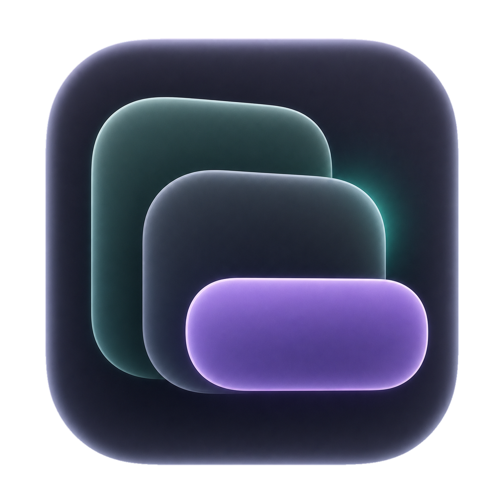

Room for your work.
Cherry / Sidebar studies · September 2026
Interactive prototype · Sample data
A
Focused project
B
Project outline
Explore a state
Everyday work
No projects
Project without folders
Folder without terminals
One folder, fresh terminal
Nothing selected
No commands
No notes
Folder unavailable
Remote project · future
Reset state